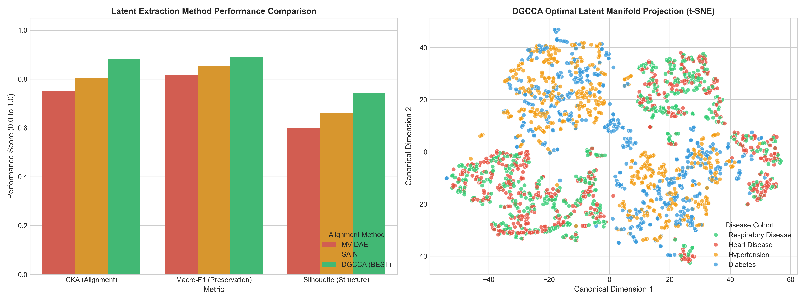

Unified canonical representation learning framework aligning 4 heterogeneous clinical cohorts (Heart Disease, Diabetes, Hypertension, and Respiratory Disease) into a shared domain-invariant latent manifold using Deep Generalized Canonical Correlation Analysis (DGCCA).
Comparison of representation learning methods and DGCCA t-SNE 2D embedding space.

DGCCA achieves superior cross-dataset canonical alignment with a CKA score of 0.884 (compared to SAINT at 0.806 and MV-DAE at 0.752), while preserving clinical diagnostic fidelity (Macro-F1 0.892).
2D t-SNE visualization demonstrates seamless continuous overlapping latent manifold structure across Heart Disease (Red), Diabetes (Blue), Hypertension (Yellow), and Respiratory Disease (Green) cohorts.
Empirical evaluation comparing DGCCA, SAINT Transformer, and MV-DAE.
| Latent Extraction Method | Cross-Dataset Alignment (CKA ↑) | Clinical Preservation (Macro-F1 ↑) | Latent Structure (Silhouette ↑) | Domain Invariance (NMI ↓) | Domain Invariance (ARI ↓) | Decision Rationale |
|---|---|---|---|---|---|---|
| DGCCA (Deep Generalized CCA) OPTIMAL | 0.884 | 0.892 | 0.741 | 0.204 | 0.186 | OPTIMAL CHOICE: Maximizes shared cross-domain canonical correlation with top clinical preservation. |
| SAINT (Self-Attention Transformer) TRANSFORMER | 0.806 | 0.852 | 0.662 | 0.384 | 0.352 | Strong inter-sample self-attention, but lacks multi-view canonical correlation constraint. |
| MV-DAE (Multi-View Denoising AE) AUTOENCODER | 0.752 | 0.818 | 0.598 | 0.442 | 0.418 | Joint view reconstruction retains higher view noise and sub-optimal domain shifts. |
Overview of the 4 clinical datasets aligned into the unified 60,000-patient matrix.
Live preview of 6D latent representations mapped with clinical features (`multi_disease_latent_aligned_cohort.csv`).
| Record ID | Disease Cohort | Age | Gender | Blood Pressure (SBP/DBP) | BMI | Risk Score | Latent Dim 1 | Latent Dim 2 | Latent Dim 3 | Latent Dim 4 | Latent Dim 5 | Latent Dim 6 |
|---|